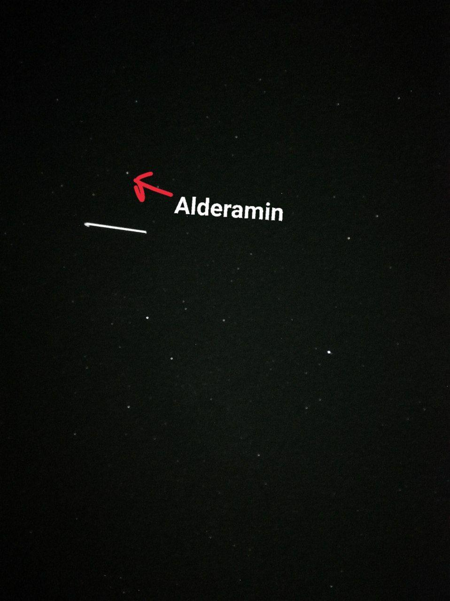
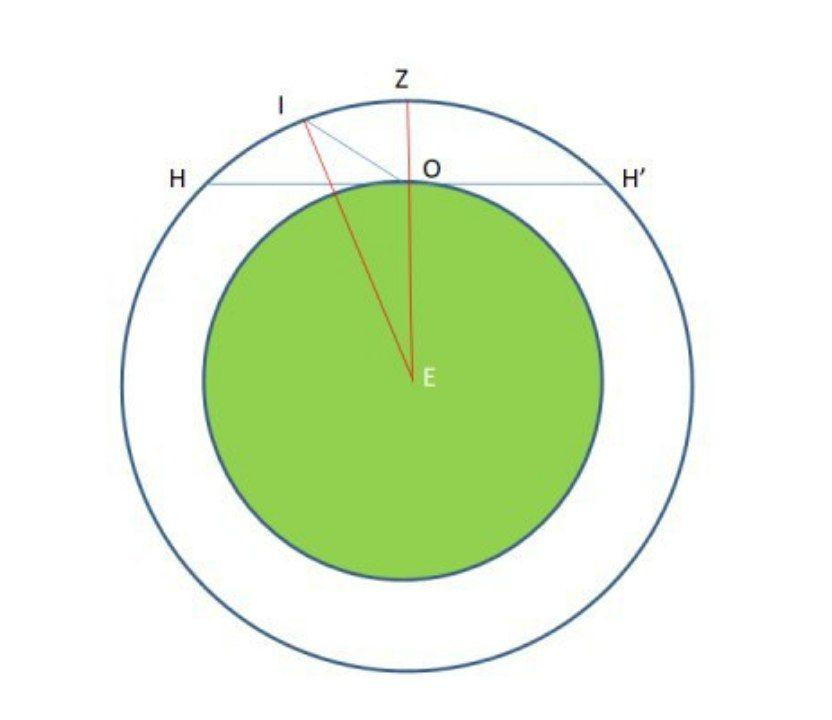

October 23, 2020, 20:25 high above the horizon flew the ISS. I set the shutter speed to 8 seconds on my phone and captured a wide bright strip: a space station.
Suddenly, I wondered, “How far away from me it was on the moment of capturing photo?”

First of all, at that moment, ISS was not exactly in the zenith, although it passed later very close to it. The ISS passed close to the star Alderamin, so at that moment, the ISS’s altitude was practically the same as one of Alderamin (74°).

Let “I” stands for ISS, “O” - observer, “E” - the center of the Earth, and “Z” - zenith. IE = radius of the Earth + attitude of the ISS’s orbit above the Earth = 6781 km. Now, from the triangle IOE, we can find the distance between observer and ISS (IO = x) by the cosine rule. 6781^2 = x^2 + 6371^2 - 2*cos(90° + 74°)*6371*x; x = 425 km.
Now I know that my phone captured the photo where ISS was on the attitude about 425 km above my village.